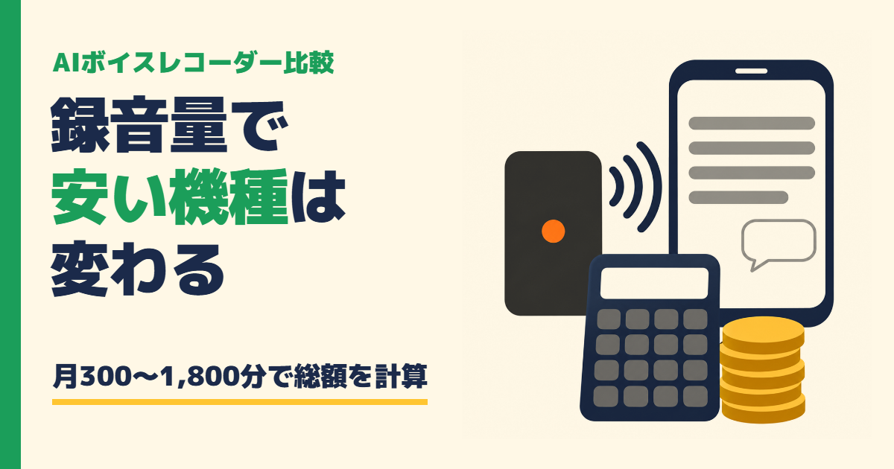

コラム ／ 業務ツール
本記事にはアフィリエイト広告(A8.net)を利用したリンクが含まれます。リンク経由でお申し込みがあった場合、運営者(SET UP)が報酬を受け取ることがあります。紹介するサービスの選定と評価は、運営者の基準で行っています。
AIボイスレコーダーの比較。本体代と文字起こし料金の「1年目の総額」で選ぶ

AIボイスレコーダーは、本体を買ったあとも、文字起こしの量によって料金がかかります。PLAUD・Notta Memo・Comuと、アプリだけで使うNottaについて、公式サイトの料金をもとに、月の録音量ごとの「1年目の総額」を計算しました。
会議や商談の議事録を、録音から自動で作れるのがAIボイスレコーダーです。比べるときに見落としやすいのが、本体の価格とは別に、文字起こしの量に応じた料金がかかることです。本体が安くても、録音が多い人は、有料プランを含めると総額が逆転することがあります。
この記事は、各社の公式サイトで2026年11月19日に確認した料金と仕様をもとにしています。使ってみた感想ではなく、公式に公開されている情報の整理です。価格は税込で、セール中の価格ではなく、公式サイトに表示されている通常価格(定価)で計算しています。料金や仕様は変わることがあるため、購入前に公式サイトで確認してください。
結論:録音量で、選び方が変わる
- オンライン会議が中心で、スマホやPCを机に置けるなら、専用機を買わずに、文字起こしアプリ(Notta など)だけで足りる場合があります。
- 対面の会議や通話を録り、月600分以内なら、無料の文字起こし枠が月600分ある Notta Memo は、1年目の総額が最も低くなります(23,500円)。
- 月600分を超えるなら、基本の文字起こしが無料・無制限の Comu(Comulytic Note Pro、30,000円)の総額が、ほかの機種より低くなります。
- 録音量が月300分以内なら、PLAUD(Plaud Note、27,500円)も無料枠の範囲で使えます。
どの機種も、要約のテンプレートやAIの機能を広げたい場合は、別に有料プランがあります。上の比較は「文字起こしの量」だけで見たものです。
AIボイスレコーダーとは
録音したあと、AIが文字起こしと要約をする
AIボイスレコーダーは、本体で録音した音声をスマホのアプリに送り、AIが文字起こしと要約を作る機器です。この記事で取り上げる機種では、文字起こしと要約は、本体ではなく、各社のアプリとクラウドのサービスで行われます。そのため、本体の代金とは別に、文字起こしの利用量に応じた料金プランがあります。
ICレコーダー・文字起こしアプリとの違い
| ICレコーダー | AIボイスレコーダー | 文字起こしアプリ | |
|---|---|---|---|
| 録音 | 本体 | 本体 | スマホ・PC |
| 文字起こし・要約 | なし(自分で行う) | アプリとクラウドで自動 | アプリとクラウドで自動 |
| 費用の形 | 本体のみ | 本体+文字起こしの料金(無料枠あり) | 月額・年額の料金(無料枠あり) |
| 向く場面 | 録音だけでよい場合 | 対面の会議、通話、スマホを出しにくい場面 | オンライン会議、スマホを机に置ける場面 |
専用機の利点は、カード型や小型の本体で、スマホとは別に録音できることです。通話の録音に対応した機種もあります。逆に、オンライン会議が中心なら、PCやスマホのアプリだけで録音から文字起こしまで完結できるため、専用機は必須ではありません。
料金は「本体」と「文字起こしプラン」の2つ
本体は買い切りです。文字起こしは、各社の無料枠の範囲なら追加の料金はかからず、超える場合は有料プランを契約します。無料枠と有料プランは、次のとおりです。
| 無料の文字起こし | 主な有料プラン | |
|---|---|---|
| PLAUD | Starterプラン:月300分 | Pro:年16,800円(月1,200分) Unlimited:年40,000円(無制限) |
| Notta Memo | ハードウェアプラン:月600分 | Notta のプレミアム:年14,220円(月1,800分) ビジネス:年30,096円(無制限) |
| Comu | スタータープラン:文字起こし・基本要約は無制限 | プレミアム:月1,733円(年払い)/月2,980円(月払い) |
| Notta(アプリのみ) | フリー:月120分(1回3分まで) | プレミアム:年14,220円/月1,980円(月払い) ビジネス:年30,096円/月4,180円(月払い) |
無料枠の考え方は、各社で違います。PLAUD と Notta Memo は「月の分数」に上限があり、Comu は文字起こしと基本の要約に上限がない代わりに、高度な分析やAIへの質問の回数に上限があります(高度分析は月3回、AI質問は月10回まで)。Notta のアプリだけで使う場合、フリープランは1回の文字起こしが3分までなので、会議の記録には有料プランが前提になります。
録音量別の「1年目の総額」
月の録音量ごとに、本体の価格と、必要になる文字起こしプランの年額を足しました。本体は各社の基本の機種(Plaud Note、Notta Memo、Comulytic Note Pro)で比べています。
| 月の録音量 | Notta (アプリのみ) | Notta Memo | Plaud Note | Comulytic Note Pro |
|---|---|---|---|---|
| 300分まで | 14,220円 | 23,500円 | 27,500円 | 30,000円 |
| 600分まで | 14,220円 | 23,500円 | 44,300円 | 30,000円 |
| 1,200分まで | 14,220円 | 37,720円 | 44,300円 | 30,000円 |
| 1,800分まで | 14,220円 | 37,720円 | 67,500円 | 30,000円 |
| 1,800分超 | 30,096円 | 53,596円 | 67,500円 | 30,000円 |
2年目以降は、プランの料金だけになる
本体は買い切りなので、2年目からは文字起こしプランの料金だけがかかります。無料枠の範囲で使い続けるなら、2年目以降の文字起こしの費用は0円です。録音が多い人ほど、2年目以降は、プランの料金の差がそのまま費用の差になります。
- 月600分まで:Notta Memo は0円、Plaud Note は Pro の年16,800円、Comulytic Note Pro は0円
- 月1,200分まで:Notta Memo は Notta のプレミアムの年14,220円、Plaud Note は年16,800円、Comulytic Note Pro は0円
アプリだけの Notta は、本体がない代わりに、毎年プランの料金がかかります。
PLAUDの価格とプランを、公式ストアで確認
本体には、月300分の文字起こし(Starterプラン)が付きます。価格とプランは変わることがあるため、購入前に公式ストアで確認してください。
PLAUD NOTE主な機種の仕様を比べる
各社の基本の機種と、画面などが付いた上位の機種の仕様です。価格は公式サイトの通常価格です。
| 基本の機種 | Plaud Note | Notta Memo | Comulytic Note Pro |
|---|---|---|---|
| 価格(税込) | 27,500円 | 23,500円 | 30,000円 |
| 無料の文字起こし | 月300分 | 月600分 | 無制限(基本) |
| 重さ | 30g | 28g | 27.6g |
| 厚さ | 2.99mm | 3.5mm | 3mm |
| 連続録音 | 最大30時間 | 約30時間 | 最大45時間 |
| 保存容量 | 64GB | 32GB | 公式で確認 |
| 通話の録音 | 対応(通話・対面の2モード) | 公式で確認 | 対応(スマホ装着時) |
| 上位の機種 | Plaud Note Pro | Notta Memo Pro | Comu Action Pro |
|---|---|---|---|
| 価格(税込) | 30,800円 | 29,700円 | 39,800円 |
| 無料の文字起こし | 月300分 | 月600分 | 無制限(基本) |
| 重さ | 30g | 30g | 約51g |
| 厚さ | 2.99mm | 3.9mm | 5.5mm |
| 画面 | 0.95インチ | 0.95インチ | 0.95インチ |
| 連続録音 | 最大30時間(長時間駆動モードで最大50時間) | 公式で確認(1ファイルの録音は5時間まで) | 最大70時間 |
| 保存容量 | 64GB | 64GB | 16GB |
| 通話の録音 | 対応(自動で判別) | 対応(自動で識別) | 公式で確認 |
PLAUD(Plaud Note/Plaud Note Pro)
カード型の Plaud Note と、画面付きの Plaud Note Pro、身につける NotePin などがあります。公式サイトでは、112言語での文字起こし、通話と対面の録音、SOC 2・HIPAA・GDPR・EN 18031 への準拠が案内されています。無料の文字起こしは月300分で、超える分は Pro(年16,800円・月1,200分)や Unlimited(年40,000円)、または追加の文字起こしパッケージ(600分2,000円など)で補います。本体とプランのセット販売もあります。PLAUDの機種ごとの違いは「PLAUD NOTEの機種比較」で詳しく比べています。
価格とプランは、PLAUDの公式ストアで確認できます。PLAUD NOTE
Notta Memo/Notta Memo Pro
文字起こしサービス Notta を提供する会社のAIボイスレコーダーです。本体に、無料のハードウェアプラン(月600分)が付きます。公式サイトでは、58言語への対応と、Notta のアプリ・Web版との連携が案内されています。すでに Notta を使っている人は、データの置き場所をそろえられます。
価格と仕様は公式ストアで確認できます。Notta 公式オンラインストア「Notta Memo」
Comu(Comulytic Note Pro/Comu Action Pro)
無料のスタータープランで、文字起こしと基本の要約を、回数・時間の制限なく使えると案内されています。高度な分析(月3回)やAIへの質問(月10回)の回数を増やしたい場合に、プレミアムプランを契約する形です。公式サイトでは、113言語への対応、AES-256による暗号化、GDPR・CCPA・HIPAA・SOC 2 への準拠が案内されています。
価格とプランは公式サイトで確認できます。【Comu】
選ぶときに確認したい4つのこと
1. 月にどれくらい録音するか
総額を決める一番の要素は、月の録音量です。週に1時間の会議が4回なら、月240分ほどです。毎日1時間の商談があるなら、月1,200分を超えることもあります。まず、自分の録音量が、各社の無料枠(PLAUD 月300分、Notta Memo 月600分、Comu は基本無制限)に収まるかを確認します。
2. 対面か、通話か、オンライン会議か
対面の会議なら、どの機種も使えます。電話の商談を録るなら、通話の録音に対応しているかを確認します。オンライン会議が中心なら、専用機より、PCのアプリで録るほうが手間が少ない場合があります。
3. 録音データの保存先とセキュリティ
文字起こしはクラウドで行われるため、録音データは各社のサーバーに送られます。PLAUD は「同意しない限り、データがAIモデルの学習に使用されることはない」、Comu は「お客様の許可なく利用・共有しない」と公式サイトに記載しています。会社の情報や取引先との会話を録る場合は、勤め先や取引先のルールで、外部サービスへの保存が認められているかを先に確認します。
4. 録音することを、相手に伝える
会議や商談を録音するときは、事前に相手に伝えるのが一般的です。広告運用の仕事では、クライアントとの定例や商談で、数字や今後の施策といった社外秘の情報を扱います。録音から議事録を作る場合は、「議事録のために録音してよいか」を最初に確認しておくと、あとで行き違いが起きにくくなります。定例で何の数字を確認するかは、「広告レポートの見方。最初に見るべき3つの数字と、見なくてよい数字の扱い」で整理しています。
専用機を買わず、アプリだけで足りる場合
次のような使い方なら、専用機を買わずに、文字起こしアプリから始める方法もあります。
- 会議の多くが、Zoom・Teams・Google Meet などのオンライン会議
- 対面の会議でも、スマホやPCを机に置いて録音できる
- まずは、議事録の作成が自分の仕事に合うかを試したい
Notta は、Zoom・Teams・Google Meet・Webex の会議の文字起こしに対応していると案内されています。フリープランは1回3分までのため、会議に使うならプレミアム(年14,220円、月払いは月1,980円)が目安です。学生・教職員向けの50%割引もあります。月払いなら、1ヶ月だけ試して、合わなければやめる、という始め方もできます。
料金は公式サイトで確認できます。【Notta】
よくある質問
- Q. AIボイスレコーダーは、月額料金が必ずかかりますか?
- 必ずではありません。各社に無料の文字起こし枠があり、その範囲なら本体の代金だけで使えます(PLAUD 月300分、Notta Memo 月600分、Comu は基本の文字起こしが無制限)。無料枠を超える場合や、AIの機能を広げたい場合に、有料プランを契約します。
- Q. 買い切りで使える機種はありますか?
- 本体はどの機種も買い切りです。文字起こしを含めて追加の料金なしで使えるかは、録音量と使う機能によります。Comu は、文字起こしと基本の要約が無料・無制限と案内されています。
- Q. 通話も録音できますか?
- Plaud Note と Plaud Note Pro、Notta Memo Pro、Comulytic Note Pro は、公式サイトで通話の録音への対応が案内されています。そのほかの機種は、公式サイトで確認してください。
- Q. 録音データは、AIの学習に使われますか?
- PLAUD は「同意しない限り、AIモデルの学習に使用されることはない」、Comu は「お客様の許可なく利用・共有しない」と公式サイトに記載しています。Notta は、公式サイトのセキュリティやプライバシーのページで確認してください。
- Q. 英語の会議でも使えますか?
- 公式サイトでは、PLAUD は112言語、Notta は58言語、Comu(Comulytic)は113言語への対応が案内されています。翻訳の機能や回数は、プランによって違います。
まとめ
- AIボイスレコーダーの費用は、本体の代金と、文字起こしの料金の2つ
- 無料の文字起こし枠は、PLAUD 月300分、Notta Memo 月600分、Comu は基本無制限
- 月600分以内なら Notta Memo、月600分を超えるなら Comulytic Note Pro の1年目の総額が低い(本体の通常価格と年払いのプランで計算)
- オンライン会議が中心なら、専用機を買わずに、アプリだけで足りる場合がある
- 会議や商談を録る前に、録音の可否と、データの保存先のルールを確認する
PLAUDの価格とプランを、公式ストアで確認
本体には、月300分の文字起こし(Starterプラン)が付きます。価格とプランは変わることがあるため、購入前に公式ストアで確認してください。
PLAUD NOTE